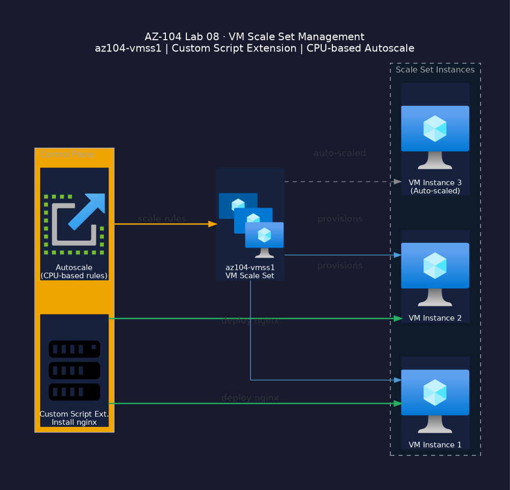

Prerequisites
- •Azure subscription with Contributor role
- •Resource group az104-rg8 with a VNet and subnet
- •SSH key pair (generate with
ssh-keygen -t rsa -b 4096)
Lab Steps

Deploy a VM
PortalSearch for Virtual machines → + Create → Azure virtual machine. Set Resource group az104-rg8, VM name az104-vm1, Region East US, Image Ubuntu Server 22.04 LTS, Size Standard_B2s, Authentication type SSH public key, generate a new key pair. Click Review + create → Create.
Configure auto-shutdown
PortalOpen az104-vm1 in the portal. Go to Operations → Auto-shutdown. Enable it and set a time (e.g. 23:00 UTC). Add a notification email.
Snapshot a managed disk
PortalOpen az104-vm1 → Disks. Click the OS disk name. In the disk blade, click + Create snapshot. Set Name az104-vm1-snap, Resource group az104-rg8, Snapshot type Full. Click Review + create → Create.
Deploy a VM Scale Set
PortalSearch for Virtual machine scale sets → + Create. Set Resource group az104-rg8, name az104-vmss1, Region East US, Image Ubuntu Server 22.04 LTS, Size Standard_B2s, Initial instance count 2, Upgrade policy Automatic. Click Review + create → Create.
Install Custom Script Extension
PortalOpen az104-vmss1 → Extensions + applications → + Add. Select Custom Script for Linux. In Settings, set Command to: apt-get install -y nginx && systemctl start nginx. Click Save.
Configure autoscale rules
PortalOpen az104-vmss1 → Scaling. Add a scale-out rule (CPU > 75% for 5 min → add 1 instance) and a scale-in rule (CPU < 25% for 5 min → remove 1 instance).
Validation Checklist
- ✓VM az104-vm1 is running and accessible via SSH.
- ✓Snapshot az104-vm1-snap appears in the Disks blade.
- ✓VMSS has 2 instances and shows Succeeded provisioning state.
- ✓Nginx responds on each VMSS instance public IP.
Cleanup Resources
Run after the lab to avoid ongoing charges.
az group delete --name az104-rg8 --yes --no-wait